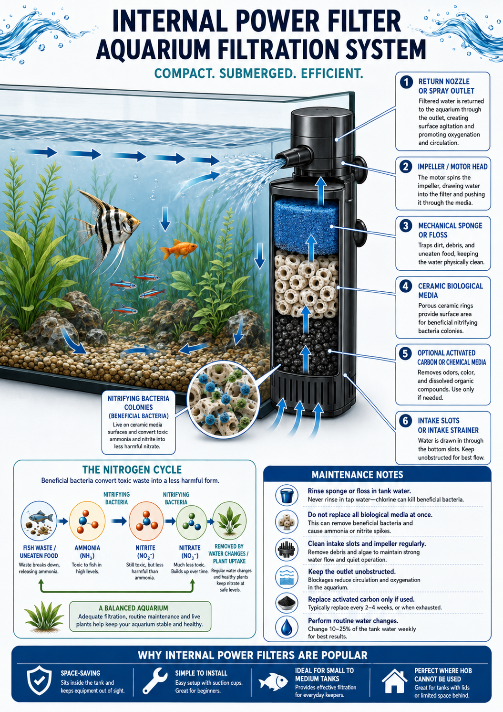
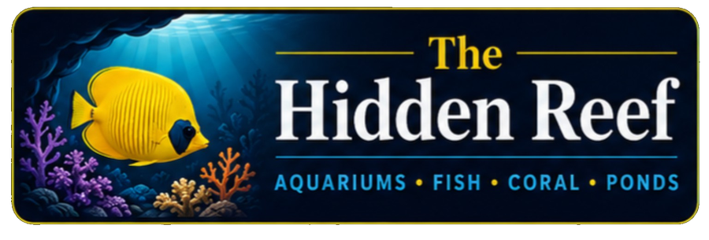
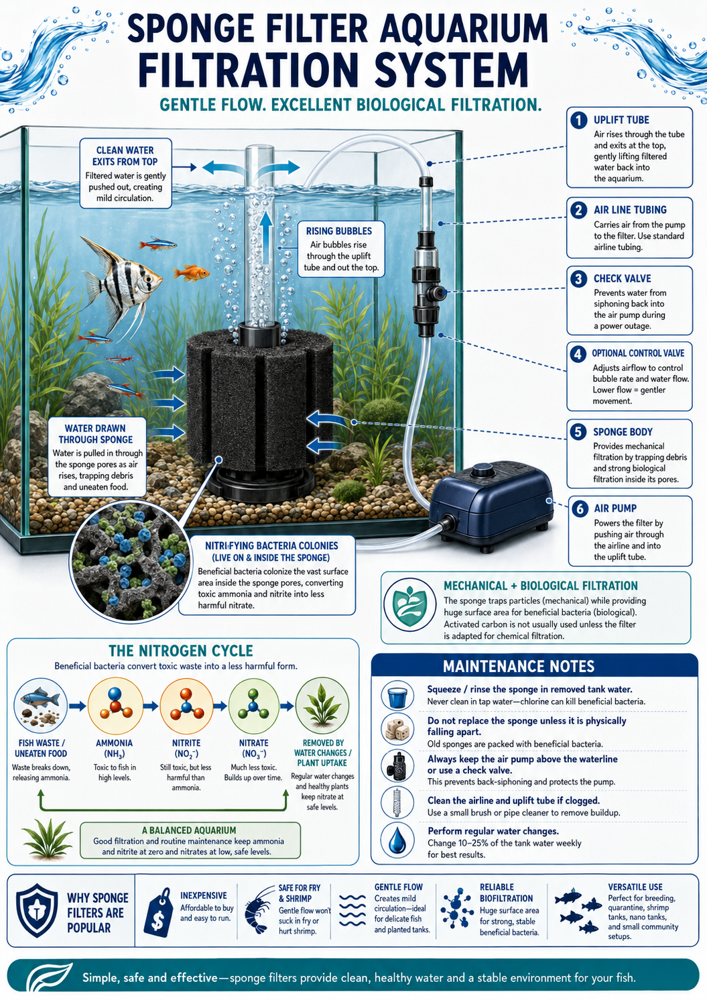
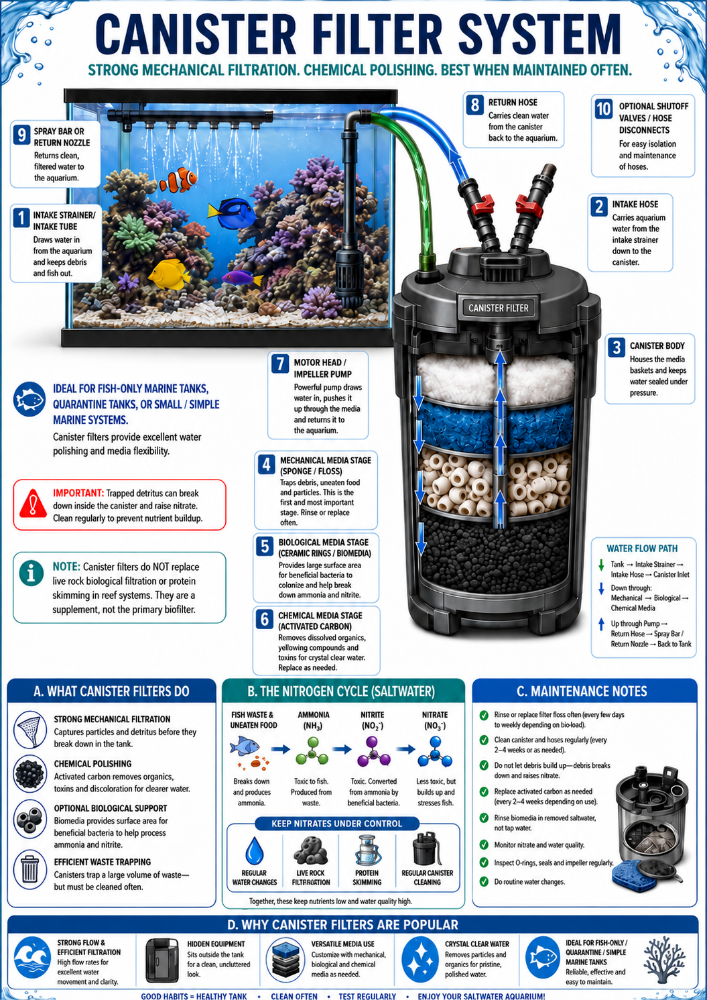
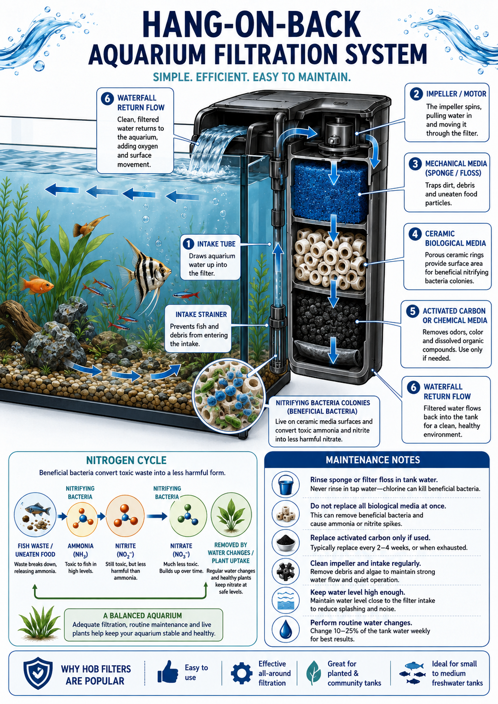
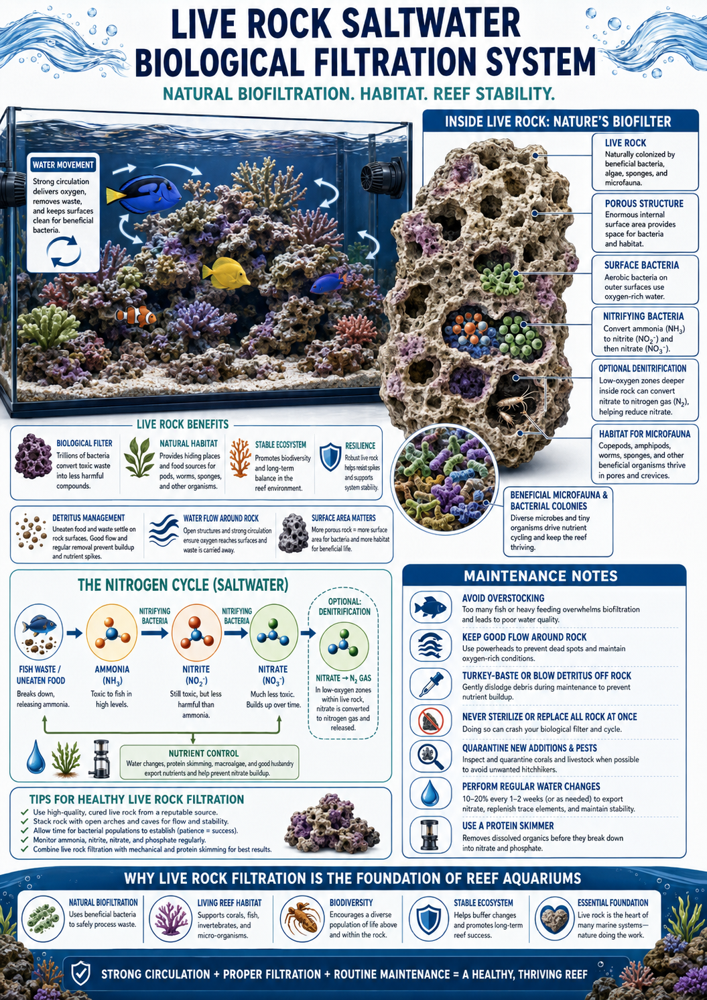
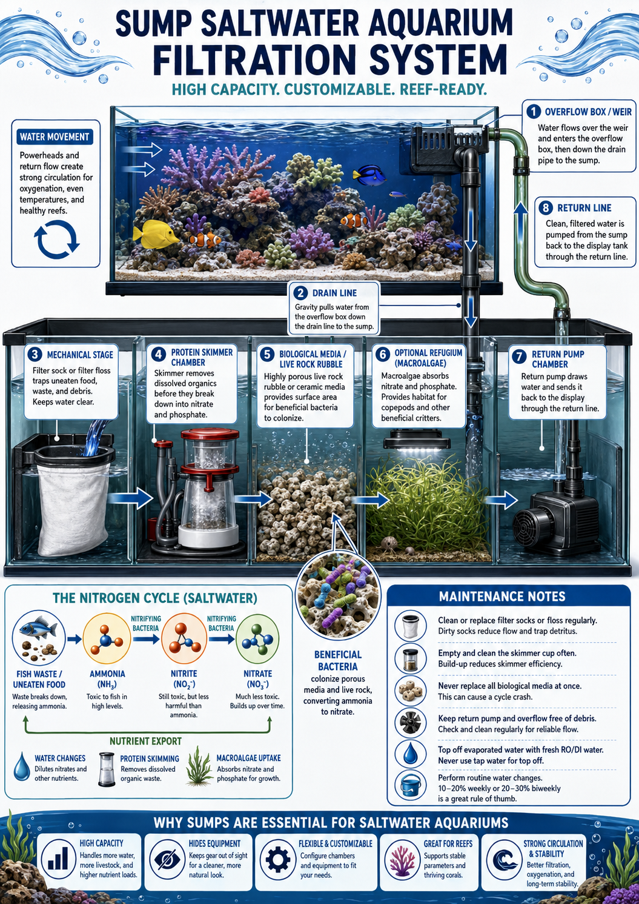
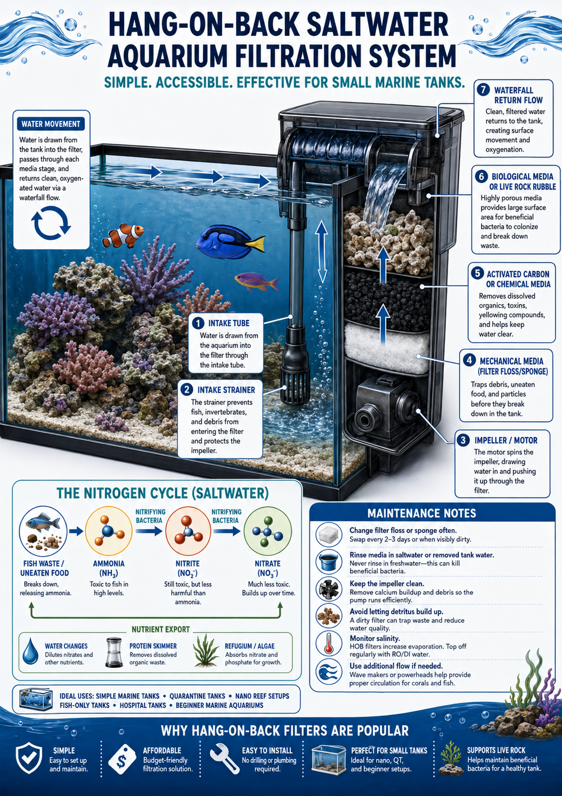
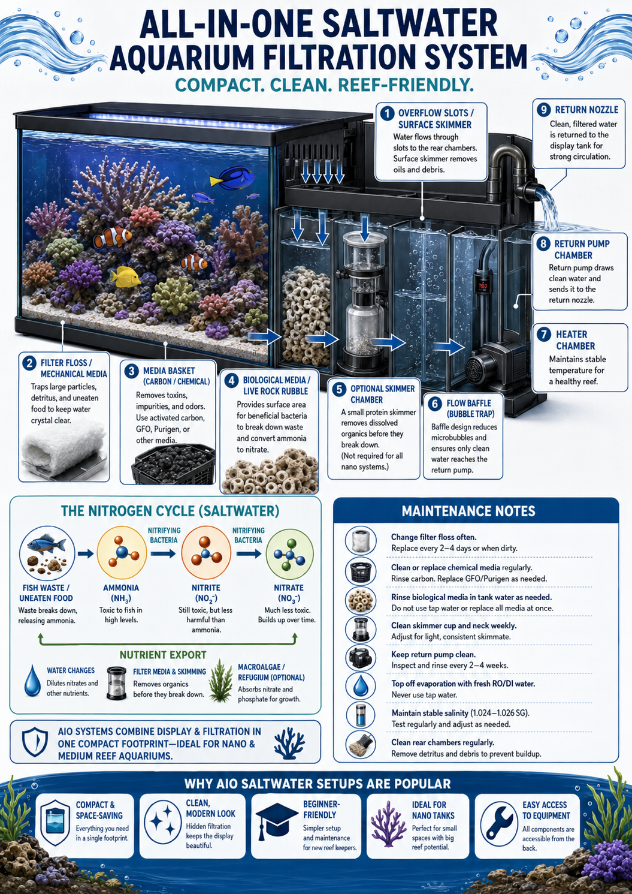
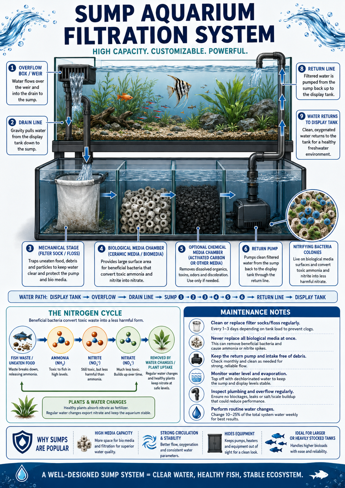

Compact filter
Inspect diagram
Internal Power Filter
Shows intake slots, sponge/floss, ceramic biological media, optional carbon, motor head, return nozzle, and the basic nitrogen cycle.

🛒↗Educational filtration diagrams give customers a quick way to see water path, media order, bacteria zones, and maintenance points before they choose equipment.
Dissected views for beginner tanks, sponge filters, and common freshwater hardware.

Shows intake slots, sponge/floss, ceramic biological media, optional carbon, motor head, return nozzle, and the basic nitrogen cycle.

Explains air pump lift, bubbles, check valve, sponge pores, beneficial bacteria, and why sponge filters are useful for fry and shrimp tanks.

Shows intake tube, impeller, sponge media, ceramic biological media, activated carbon, return flow, and the freshwater nitrogen cycle.

Explains intake, strainer, media stack, impeller, waterfall return flow, bacteria colonies, and maintenance for small to medium freshwater tanks.
Reef-specific systems: live rock biofiltration, saltwater sumps, HOB marine filters, and all-in-one nano reef filtration.

Explains porous live rock, surface bacteria, nitrifying zones, microfauna habitat, flow, detritus management, and reef stability.

Shows overflow, drain line, filter sock, protein skimmer, biological media, refugium, return pump, and return line.

Walks through intake, media stages, impeller, live rock rubble, waterfall return, salinity care, and added flow needs.

Shows rear filtration chambers, overflow slots, filter floss, media basket, live rock rubble, skimmer chamber, heater, pump, and return nozzle.

Maps overflow, drain line, mechanical stage, biological media chamber, chemical media, return pump, and return line back to the display tank.
Best for compact tanks where the filter sits inside the aquarium and keeps equipment out of sight behind plants or hardscape.
Best for low-flow tanks, fry, shrimp, quarantine systems, and simple biological filtration powered by an air pump.
Best as a broad beginner explanation for common freshwater tanks where customers need to understand intake, media layers, return flow, and routine maintenance.
Best for small to medium freshwater tanks where customers want simple setup, easy access, and visible waterfall return flow.
Best for reef aquariums where live rock is both habitat and a biological filter that supports bacteria, microfauna, and long-term stability.
Best for reef-ready tanks that need more water volume, cleaner equipment placement, protein skimming, refugium space, and stronger nutrient export.
Best for small marine tanks, quarantine systems, nano reef setups, hospital tanks, and fish-only saltwater aquariums where simple access matters.
Best for nano and medium reef aquariums where the display and filtration chambers are combined into one compact footprint.
Best for larger systems, reef tanks, high bioload displays, and customers who need room for pumps, media, and hidden equipment.